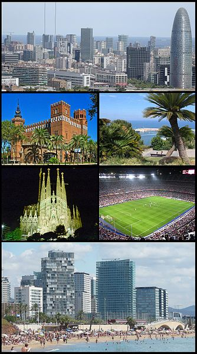

|
Coridele Ibiza Tenerife Madrid Barcelona Bilbao Valencia |
BarcelonaBarcelona oferă o oportunitate unică pentru turiști, de a se plimba de la rămășițele romane spre cetatea medievală, și spre orașul modern cu bulevardele sale deschise și toate intersecțiile lăsate largi de colțurile clădirilor tăiate în mod unic. Centrul istoric al orașului este aproape plat, în timp ce orașul modern se întinde spre dealurile înconjurătoare, având străzi ce cresc în altitudine, ce aduc aminte de San Francisco. O trăsătură notabilă este Les Rambles, o serie de bulevarde care pleacă din centrul orașului spre frontul de apă, plin de oameni până noaptea târziu, cu florari, vânzători de păsări, artiști de stradă, cafenele și restaurante. Mergând în sus sau în jos pe Les Rambles poți vedea prestigioasa operă El Liceu, piața alimentară La Boqueria și Piața Plaça Reial, cu ale sale arcuri și palmieri, printre alte clădiri interesante. La Rambla se termină în portul vechi, unde o statuie a lui Cristofor Columb indică spre mare. În apropiere se află Museu Marítim (Muzeul Maritim) care prezintă istoria vieții din Mediterană. Clădirea muzeului este fostul șantier naval, unde erau construite vasele ce navigau Mediterana. Vechiul port oferă felurite splendori, incluzând și cel mai mare Acvariu din zona mediterană. Remarcabilă este moștenirea orașului de la arhitectul Antoni Gaudí, care a locuit și a lucrat la Barcelona, și care a lăsat lucrări faimoase ca Palau Güell, Parc Güell și imensa, dar încă neterminata biserică Sagrada Família, care este în construcție din 1882, fiind finanțată din bani publici ca și catedralele din Evul Mediu. Se așteaptă să fie terminată până în 2020. În districtele moderne ale orașului se află mai multe bulevarde pe care se află magazine ale unor companii internaționale de îmbrăcăminte, bijuterii, bunuri din piele și altele. Cel mai elegant bulevard este Passeig de Gràcia, unde se află două clădeiri de ale lui Antoni Gaudí, Casa Milà (La Pedrera) și Casa Batlló. Pentru vederi spectaculare ale orașului și liniei de coastă există două dealuri. Unul, dealul Montjuïc, este lângă port. Pe vârful său se află o veche fortăreață care mai demult supraveghea intrarea în port. În jurul dealului se află Stadionul Olimpic și Palatul Sportiv, realizate de arhitectul japonez Arata Isozaki, la fel ca și Grădinile Botanice. La marginea orașului se află dealul Tibidabo, cu mai mult de 500 metri înălțime, cu un parc de distracție în vârf. |